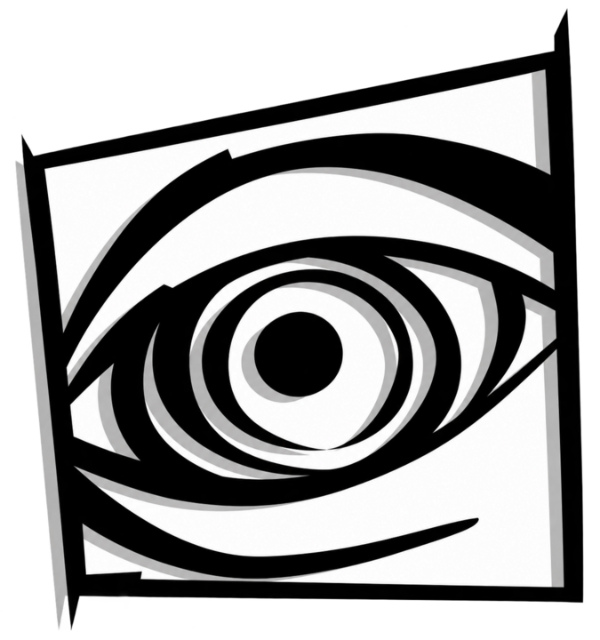
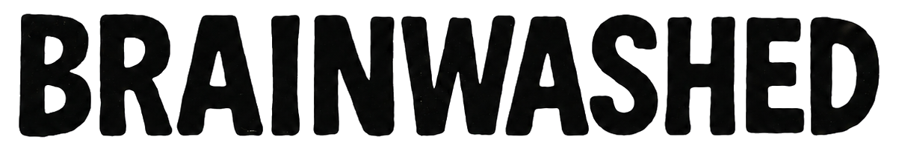

The first issue
Brainwashed was first published in Jakarta in September 1996—an independent fanzine grounded in DIY culture, heavy music, and voices overlooked by mainstream media.


Let's talk ↗Brainwashed began as Jakarta’s first independent music fanzine, originally published by Wenzrawk in September 1996. It was firmly rooted in a DIY ethos, a fierce passion for heavy music, and the need to create an alternative platform for voices marginalised by the mainstream media at the time.
Over the past three decades, Wenzrawk has worked across music journalism, artist management, concert promotion, live entertainment, bar & venue business, record label, music museum, and creative placemaking. He spent more than 12 years at Rolling Stone Indonesia, documenting the evolution of local and international music scene while building an extensive network across the national and international entertainment industry.
Brainwashed was first published in Jakarta in September 1996—an independent fanzine grounded in DIY culture, heavy music, and voices overlooked by mainstream media.
From 2003 to 2010, Wenzrawk managed Jakarta new-wave band The Upstairs during one of the most defining periods of their career. The band signed with Warner Music Indonesia, earned a reputation as the country’s “Raja Pensi” for their commanding presence on the nationwide school and university festival circuit, and won Best Alternative at the 2006 AMI Awards.
Under the banner of Brainwashed Entertainment, Wenzrawk stepped into concert promotion by bringing acclaimed Swedish garage-rock band The (International) Noise Conspiracy to Indonesia. Fronted by Dennis Lyxzén of Refused, the band embarked on a five-city Indonesian tour spanning Surabaya, Jakarta, Palembang, Semarang, and Bali—an ambitious independent touring circuit at the time.
He authored and published Rolling Stone Music Biz: Manual Cerdas Menguasai Bisnis Musik, a practical guide to navigating the music business. Reprinted three times, the book became a trusted reference for many emerging musicians taking their first steps into Indonesia’s professional music industry.
Wenzrawk is a co-founder of M Bloc Space, the Jakarta-based creative and cultural hub established in the Blok M district in 2019. Within M Bloc Space, he conceived and initiated M Bloc Live House, an intimate music venue built inside a former warehouse once used by Indonesia’s state-owned security printing company.
The venue was created to support independent bands from Jakarta and beyond at a time when emerging artists were struggling to find accessible, professionally equipped, and high-quality spaces in which to perform.
He later led the management and revitalisation of Lokananta in Surakarta—Indonesia’s historic recording studio—transforming it into a more accessible cultural destination, music museum, live venue, and creative hub for a new generation.
Through Brainwashed Management, Wenzrawk carries forward the same spirit that shaped the original fanzine: independent, critical, and committed to building sustainable careers for artists. Brainwashed currently manages Seringai and Stepforward, while representing Negatifa exclusively for live bookings.
Management is a long-term commitment—not a transaction.
For Wenzrawk, music management goes far beyond coordinating shows and negotiating deals. It is a long-term commitment to protecting artistic identity, strengthening the surrounding ecosystem, creating meaningful opportunities, and ensuring that artists have greater agency and a more sustainable future.
Three decades after its inception, Brainwashed is now powered by a small, close-knit team with solid experience across Indonesia’s music industry. It has also evolved into a legally incorporated company, building a stronger professional foundation from which to navigate the increasingly complex challenges of the music business in the years ahead.
More than a management company, Brainwashed is the continuation of an idea that has remained alive since 1996: independent music needs people willing to stand behind it—with knowledge, integrity, and a clear sense of purpose.Meet the roster ↗